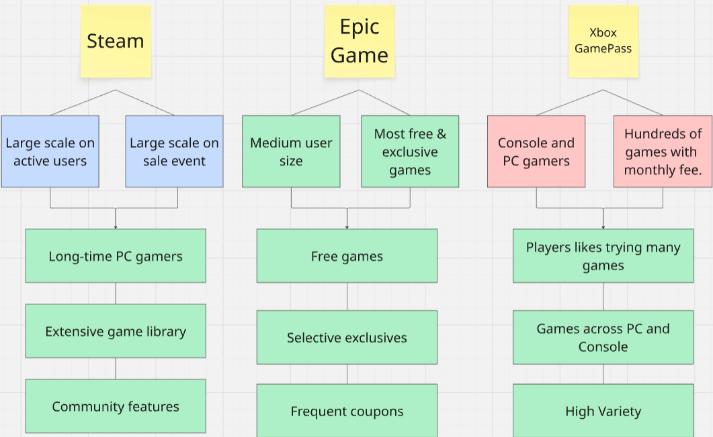

Game platforms are digital distribution services where players can purchase, download, and launch games.
These platforms often provide additional services such as multiplayer matchmaking, game updates, achievements, social features, and digital rights management (DRM).
In this analysis, we are focusing on these three major PC game platforms
By comparing potential benefits and reducing future costs, gamers can decide which Game platform to purchase a new game from
Popular Games
Often, games are judged by their visibility. Games that have great marketing seem to be much more impactpactful than they actually are. This graph showcases the sales of some of the most popular games as well as their impact as they age.
Community Size
Monthly Active Users (MAU)
Overall, Steam has the largest scale with the most monthly active users. Epic Games ranks second, and Xbox comes last.
User base growth
Surprisingly, the annual user growth numbers are similar across the three platforms.
But given Steam's large scale, Epic Games and Xbox have better user growth potential because they could have a higher percentage increase.
Future Cost Savings
Steam
Steam also has the largest sales volume, offering the highest number of games on discount. However, it rarely gives away games for free.
Epic Games
Epic games is well known for its FreeGames Strategy, and therefore it has the most free games offered by far.
Xbox Games
Due to Xbox's subscription fee, it has the lowest number of games on sale and lowest new game offering. However, its Game Pass with the subscription fee can let gamers play hundreds of games with a low instant cost.
Conclusion
References
Credits
Xu Jiang
Gavin Mai
Charlie Morgan